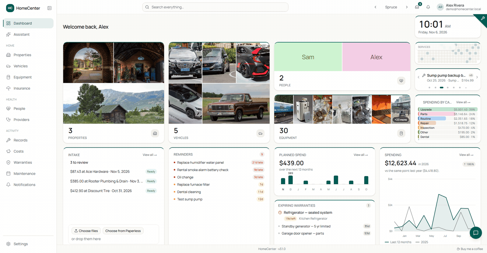
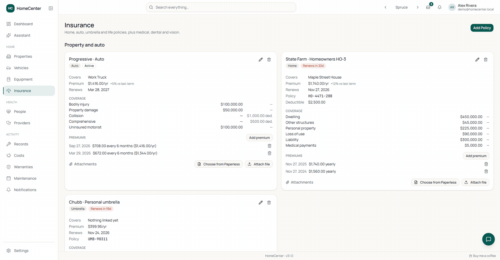
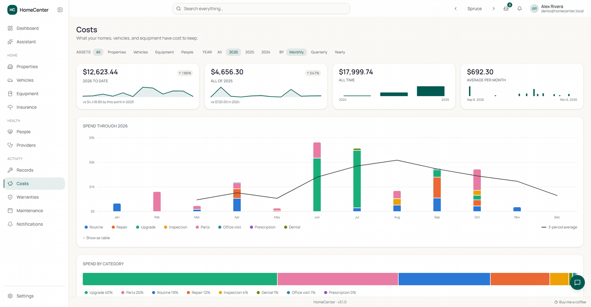
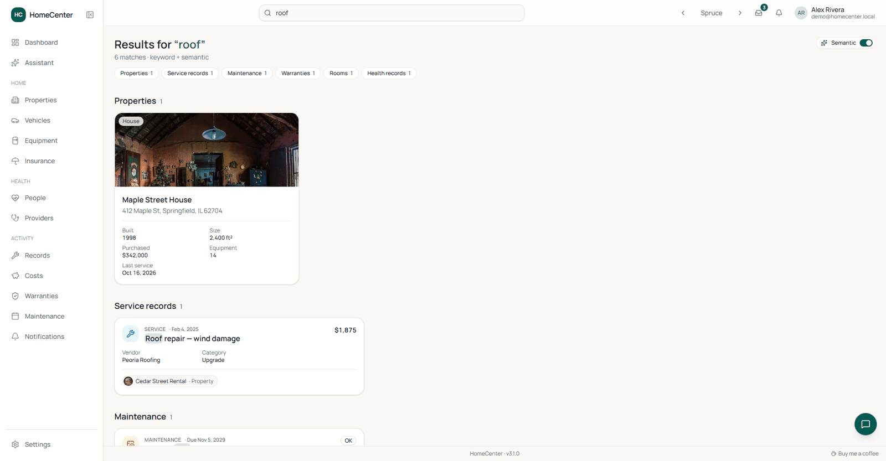
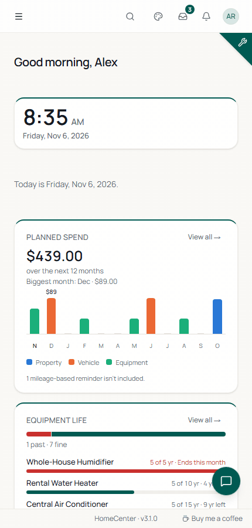
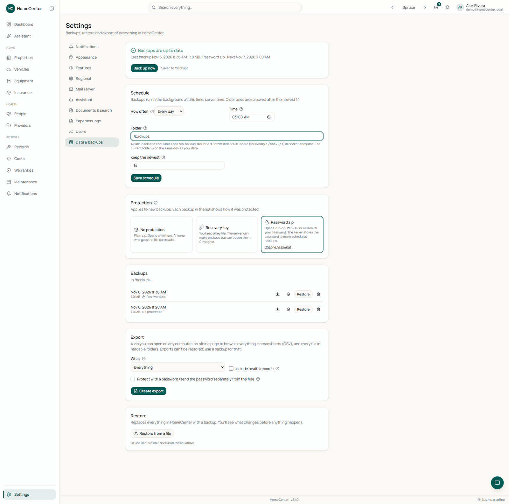

Home
- Properties, vehicles & equipment with photos, purchase info and model/serial numbers
- Rooms with paint and flooring, and a room on each service record
- Service records with vendor, cost and category
- Warranties with expiry status at a glance

Service history, costs, insurance and reminders for your homes, vehicles, equipment and family health. Every receipt and manual is searchable, backups are built in, and it all runs in one Docker container.

Recorded on the demo data, version 3.1.0. Each one runs about a minute or less.
From the furnace filter to a prescription refill, HomeCenter remembers what was done, what it cost and what's coming up.
Start from the default layout, then make it yours. Switch on edit mode, drag and resize cards, and pick new ones from the catalog.
Give each thing you own a page: photo, details, and every repair, warranty and reminder attached to it.
Set a reminder once. HomeCenter works out the next due date, tells you in time, and adds its estimated cost to your planned spend.
Home, auto, umbrella, life and renters policies sit next to health coverage, with the numbers you look up at renewal time.

Every service record carries a cost. HomeCenter adds them up across the household, then looks ahead using your reminders.

Drop receipts, photos, PDFs or forwarded emails anywhere. HomeCenter reads the date, vendor and total, suggests the asset and files it as a service record.
Keep each person's medical picture in one place, and print a clean summary for the next appointment.
One search box covers assets, records and the text of every file you've uploaded. Ask in your own words; it finds what you meant.

The assistant looks up your records and documents to answer plain-language questions. It can also draft a health observation for you to review and save.
Reminders land in the app, your inbox or your phone. Reports turn an asset's history into a document you can give a buyer, a mechanic or a doctor.
Set it once under Settings. It applies to screens, reports, notifications, the assistant, receipt reading and search.
Pick one from the top bar or step through them with its arrows. Spruce Night is the dark one shown here.
Open HomeCenter in your phone's browser and install it from Settings. The dashboard reflows into a single column.

Backups are built in. Each one is a single file holding the database and every uploaded file, and it's checked after it's written.

2.0 brought Intake, reminder controls, twelve themes and sharper search. Here is what arrived after it.
HomeCenter is one container and one data folder. You own both.
Runs on a Synology, Unraid, a Raspberry Pi-class box or any Docker host. Updates never touch your data folder.
OCR and meaning search run inside the container. Their only network call is an optional model download.
AI is off until you turn it on. Health can be hidden entirely. Mail, API, push and Paperless secrets are encrypted at rest.
/volume1/docker/homecenter.AUTH_SECRET with openssl rand -base64 32.docker compose up -d, or deploy as a Portainer stack.http://<server>:3000. The database and admin account are created on first boot.services: homecenter: image: ghcr.io/yatzin/homecenter:latest ports: - "3000:3000" volumes: - /volume1/docker/homecenter:/data # - /volume2/backups/homecenter:/backups # optional: second disk for backups environment: DATABASE_URL: "file:/data/homecenter.db" AUTH_SECRET: "" # required ADMIN_EMAIL: "your@email.com" ADMIN_PASSWORD: "changeme" restart: unless-stopped
Source-available. HomeCenter is released under the PolyForm Noncommercial License 1.0.0: it's free for noncommercial use, and you can read the code and run it on your own hardware. It isn't an OSI-approved open source licence, and commercial use isn't covered. The full text is in the LICENSE file on GitHub.
No. HomeCenter runs on your local network. It goes online only for things you turn on: email and push reminders, a cloud AI provider, Paperless-ngx on another host, or downloading a larger search model.
Your question and the records needed to answer it go to the AI provider you configure, including health records if you allow it. Point it at Ollama or LM Studio on your own network and nothing leaves. The assistant is off until an admin sets it up, and chats are never stored on the server.
In the app. Under Settings → Data & backups, an admin can run Back up now or set a daily or weekly schedule; the newest 14 are kept by default. Each backup is one file with the database and every upload, and it is verified after it's written. You can leave it unprotected, use a recovery key, or use a password zip. Restore from the same page: a dry run shows what would change first, and a staged restore can be cancelled before the restart. You can also make an offline export with a viewer. Mount a second disk or NAS share at /backups, because a backup on the same disk doesn't survive that disk failing, and keep your AUTH_SECRET.
Yes. Add your Paperless-ngx URL and token under Settings → Paperless-ngx, then use Choose from Paperless when attaching a file or in Intake. Import is one-way, into HomeCenter. You can schedule a daily or weekly sync, and a badge flags a link that no longer resolves.
Images are built for amd64 and arm64, so it runs on Synology, Unraid and other Docker hosts, including 64-bit ARM boards such as a Raspberry Pi.
Yes. An admin adds users under Settings → Users as admin or standard. Everyone sees the same household records. Admins also manage features, regional settings, mail, the assistant, Paperless-ngx and backups, and each person chooses their own email and push reminders. Forgotten passwords can be reset by email once a mail server is set up.
Yes. Open it in the phone's browser and install it from Settings → Install. The dashboard has a phone layout.
It stays in the database on your server, behind HomeCenter's login with sign-in throttling. The database file itself isn't encrypted, so protect the data folder and your backups like any other private files. The assistant can't read health documents unless an admin allows it, and you can hide the Health section entirely.
Source-available and free for noncommercial use under the PolyForm Noncommercial License 1.0.0. One container, one data folder, on your own server.